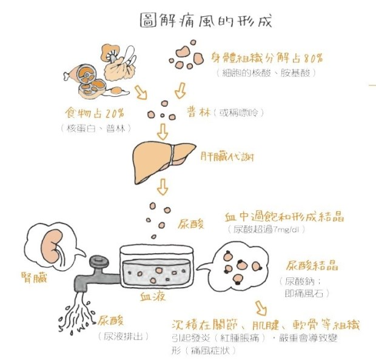
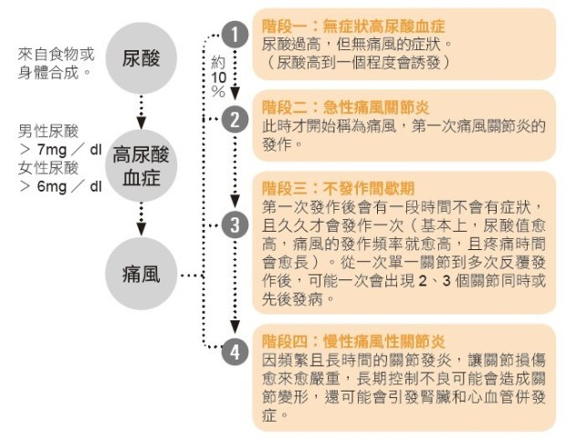

健康檢查發現尿酸超標，就是痛風嗎？
痛風自古以來就有帝王病的別稱。它來去無風，毫無預警，但痛起來要人命。到底什麼是痛風？尿酸超標就是痛風嗎？尿酸過高是不是就不能吃肉？如何預防痛風的發作，平日飲食又該如何吃才好？

圖片來源：《營養師百問百答：圖解營養學‧百大飲食迷思全破解！》
血中能溶解的尿酸有一定上限，當超過此上限（37℃下為7mg／dl）時，尿酸就會形成結晶。在酸的環境和水少的狀態下，尿酸會更容易結晶，所以鹼性飲食和多喝水就成了高尿酸或痛風飲食的基本重點。
認識尿酸、高尿酸血症和痛風的親密關係！
尿酸是普林代謝後的產物。由於普林是構成DNA和RNA的基本材料，故所有動植物細胞都含普林，且動物食物因細胞排列較緊密，故普林含量一般較植物食物高。普林主要來自食物（約占2成）及身體分解代謝（約占8成）。在體內，普林會經肝臟代謝形成尿酸，經腎臟排出體外，若普林攝取或製造過多，或腎臟排出量減少，就會導致尿酸過高。尿酸過高時會在血中析出，形成尿酸鈉結晶，這些結晶沉積在關節等組織時，會引起白血球攻擊而發炎，出現紅、腫、脹、痛等症狀，嚴重時甚至造成關節變形，此即為痛風。
尿酸過高並不等於就是痛風。高尿酸血症僅有10％左右會演變為痛風，直到第一次痛風關節炎發作時才稱為痛風。第一次痛風發作後會進入不發作的間歇期，若不加以理會，可能演變成慢性痛風性關節炎。

圖片來源：《營養師百問百答：圖解營養學‧百大飲食迷思全破解！》
痛風除了會損傷關節、破壞骨質造成行動不便外，還可能導致腎結石，引發腎病、心血管疾病及代謝症候群，並增加死亡風險。因此，高尿酸血症患者要積極控制，避免痛風的誘發。
飲食、生活遠離痛風的威脅！
痛風飲食目的在矯正偏高的尿酸值，避免痛風的誘發；降低發炎造成的關節損傷及預防痛風引起的併發症。
一、維持理想體重：體重過重者宜減肥，但速度不宜太快，以免因組織快速分解而使尿酸上升；若遇到痛風發作期應暫停減肥。
二、多喝水：每天宜攝取2000∼3000毫升的水，幫助尿酸排泄。但要避免飲酒（特別是啤酒、烈酒），因酒精會影響尿酸排泄。
三、採低普林飲食：健康檢查發現尿酸超標，就是痛風嗎？
痛風自古以來就有帝王病的別稱。它來去無風，毫無預警，但痛起來要人命。到底什麼是痛風？尿酸超標就是痛風嗎？尿酸過高是不是就不能吃肉？如何預防痛風的發作，平日飲食又該如何吃才好？
血中能溶解的尿酸有一定上限，當超過此上限（37℃下為7mg／dl）時，尿酸就會形成結晶。在酸的環境和水少的狀態下，尿酸會更容易結晶，所以鹼性飲食和多喝水就成了高尿酸或痛風飲食的基本重點。
認識尿酸、高尿酸血症和痛風的親密關係！
尿酸是普林代謝後的產物。由於普林是構成DNA和RNA的基本材料，故所有動植物細胞都含普林，且動物食物因細胞排列較緊密，故普林含量一般較植物食物高。普林主要來自食物（約占2成）及身體分解代謝（約占8成）。在體內，普林會經肝臟代謝形成尿酸，經腎臟排出體外，若普林攝取或製造過多，或腎臟排出量減少，就會導致尿酸過高。尿酸過高時會在血中析出，形成尿酸鈉結晶，這些結晶沉積在關節等組織時，會引起白血球攻擊而發炎，出現紅、腫、脹、痛等症狀，嚴重時甚至造成關節變形，此即為痛風。
尿酸過高並不等於就是痛風。高尿酸血症僅有10％左右會演變為痛風，直到第一次痛風關節炎發作時才稱為痛風。第一次痛風發作後會進入不發作的間歇期，若不加以理會，可能演變成慢性痛風性關節炎。
痛風除了會損傷關節、破壞骨質造成行動不便外，還可能導致腎結石，引發腎病、心血管疾病及代謝症候群，並增加死亡風險。因此，高尿酸血症患者要積極控制，避免痛風的誘發。